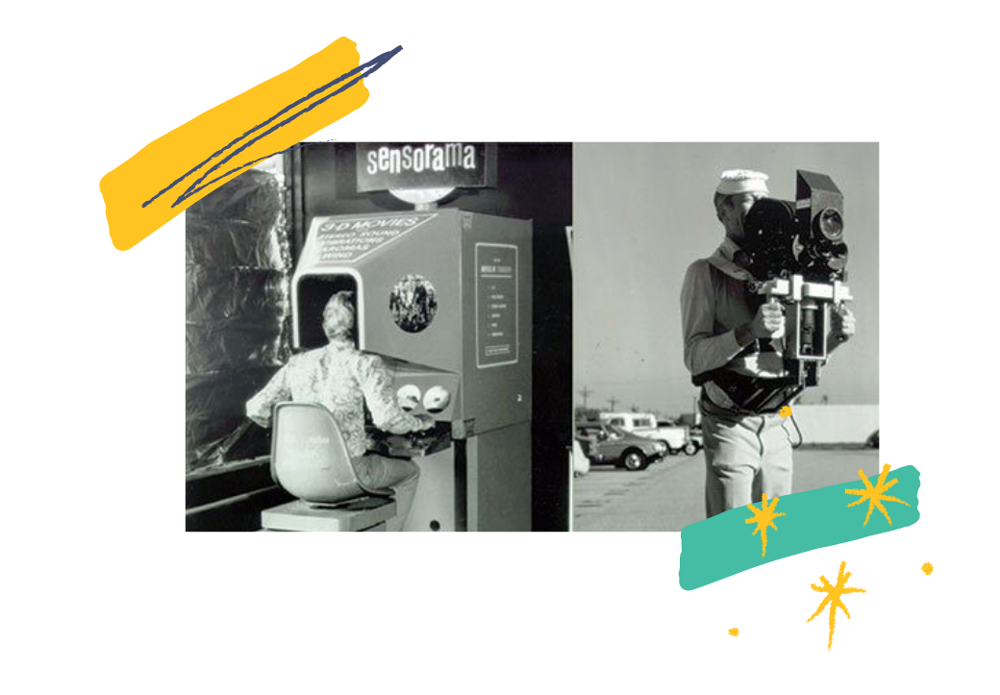

Wah wah, akhir-akhir ini pengguna Instagram ramai mengunggah foto PS5 di Instagram Story. Lagi pada banyak duit nih kayaknya. Eits, tunggu dulu. Ap aitu bener foto PS5 diatas mejany nyata? Atau jangan-jangan Cuma pakai fitur filter Instagram?
Filter dengan judul “PS5 Box” buatan akun @aroneverithing sempat viral beberapa waktu lalu. DIkarenakan filter Instagram tersebut dapat menampilkan kotak PS5 secara tiga dimensi dari berbagai sisi seolah benar-benar ada di tempat foto itu diambil.
Filter ini menggunakan teknologi yang disebut dengan Augmented Reality atau AR. teknologi yang menggabungkan benda maya dua dimensi dan ataupun tiga dimensi ke dalam sebuah lingkungan nyata lalu memproyeksikan benda-benda maya tersebut secara realitas dalam waktu nyata.
Dasar Augmented Reality ini sebenarnya telah ada dari tahun 1957-1962, Ketika seorang penemu dan sinematografer, Morton Heilig menciptakan sebuah simulator yang disebut Sensorama dengan visual, getaran dan bau. Temuan inilah yang mendasari terciptanya Augmented Reality yang canggih seperti yang ada sekarang.

Saat ini metode pengembangan AR terbagi menjadi 2 metode. Metode yang pertama adalah Marker Augmented Reality. Pada metode ini komputer akan mengenali posisi dan orientasi marker dan menciptakan dunia virtual 3D yaitu titik (0,0,0) dan tiga sumbu yaitu X, Y, dan Z.
Metode yang kedua adalah Markerless Augmented Reality. Dengan metode ini pengguna tidak perlu lagi menggunakan sebuah marker untuk menampilkan elemen-elemen digital, dengan tool yang disediakan Qualcomm untuk pengembangan Augmented Reality berbasis mobile device, mempermudah pengembang untuk membuat aplikasi yang markerless. Beberapa cara yang digunakan computer untuk mengenali benda yaitu face tracking, 3D Object Tracking, Motion Tracking dan GPS Based Tracking. Metode markles 3D Object Tracking lah yang digunakan filter Instagram untuk memunculkan box PS5 di kamera pengguna.
Yaah, walaupun sekarang masih pakai filter Instagram, tapi semoga kelak kamu bisa beli PS5 yang asli ya. ~Aga